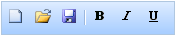

Refer to the Getting Started section for the prerequisites needed to add a toolbar control to an ASP.NET MVC application.
Using Builder
The following steps explain how to add a toolbar to an MVC application through the builder.
1. In View, create a ul or li list of toolbar items and invoke the toolbar helper.
|
View[ASPX] <div id="toolbarItems" style="visibility:hidden"> <ul> <li id="New" title="New [Ctrl + N]"> <img src='<%= Url.Content("~/Content/new.gif")%>' /></li> <li id="Open" title="Open file]"> <img src='<%= Url.Content("~/Content/openremote.gif")%>' /></li> <li id="Save" title="Save [Ctrl + S]"> <img src='<%= Url.Content("~/Content/savelocal.gif")%>' /></li> </ul>
<ul> <li id="Bold" tilte="Bold [Ctrl + B]"> <img src='<%= Url.Content("~/Content/bold.gif")%>' /></li> <li id="Italic" tilte="Bold [Ctrl + I]"> <img src='<%= Url.Content("~/Content/italic.gif")%>' /></li> <li id="Underline" tilte="Bold [Ctrl + U]"> <img src='<%= Url.Content("~/Content/underline.gif")%>' /></li> </ul> </div> <%=Html.Syncfusion().Toolbar("myToolbar") .TargetId("toolbarItems")%>
|
|
View[cshtml] <div id="toolbarItems" style="visibility:hidden"> <ul> <li id="New" title="New [Ctrl + N]"> <img src='@Url.Content("~/Content/new.gif")' /></li> <li id="Open" title="Open file]"> <img src='@Url.Content("~/Content/openremote.gif")' /></li> <li id="Save" title="Save [Ctrl + S]"> <img src='@Url.Content("~/Content/savelocal.gif")' /></li> </ul> <ul> <li id="Bold" tilte="Bold [Ctrl + B]"> <img src='@Url.Content("~/Content/bold.gif")' /></li> <li id="Italic" tilte="Bold [Ctrl + I]"> <img src='@Url.Content("~/Content/italic.gif")' /></li> <li id="Underline" tilte="Bold [Ctrl + U]"> <img src='@Url.Content("~/Content/underline.gif")' /></li> </ul> </div> @{ Html.Syncfusion().Toolbar("myToolbar") .TargetId("toolbarItems").Render();}
|
2. Use the first argument of the helper to specify a unique ID attribute. TargetId is the ID div tag holding the list of toolbar items.
Tip: The toolbar items can be grouped under different ul tags so that a separator will be rendered between groups.
 Note: The style attribute visibility of the
toolbar content is set to hidden for better rendering when a page loads. The
visibility will be reset internally once the resources related to the control
are loaded completely.
Note: The style attribute visibility of the
toolbar content is set to hidden for better rendering when a page loads. The
visibility will be reset internally once the resources related to the control
are loaded completely.
3. Run the application.
Using Properties Model
The following steps explain how to add a toolbar to an ASP.NET MVC application.
1. In the controller, create an instance of ToolbarModel.
2. Define the TargetId property and pass the instance through the view-specific data to the view.
|
[Controller] public ActionResult Index() { ToolbarModel myModel = new ToolbarModel(); myModel.TargetId = "toolbarItems";
//Pass the instance through the view data to the view. ViewData["myToolbar"] = myModel; return View(); }
|
Note: The ViewData key should match the first
argument of the toolbar helper in the view.
3. In View, create a ul-li list of toolbar items and invoke the toolbar helper.
|
View[ASPX] <div id="toolbarItems" style="visibility:hidden"> <ul> <li id="New" title="New [Ctrl + N]"> <img src='<%= Url.Content("~/Content/new.gif")%>' /></li> <li id="Open" title="Open file]"> <img src='<%= Url.Content("~/Content/openremote.gif")%>' /></li> <li id="Save" title="Save [Ctrl + S]"> <img src='<%= Url.Content("~/Content/savelocal.gif")%>' /></li> </ul> <ul> <li id="Bold" tilte="Bold [Ctrl + B]"> <img src='<%= Url.Content("~/Content/bold.gif")%>' /></li> <li id="Italic" tilte="Bold [Ctrl + I]"> <img src='<%= Url.Content("~/Content/italic.gif")%>' /></li> <li id="Underline" tilte="Bold [Ctrl + U]"> <img src='<%= Url.Content("~/Content/underline.gif")%>' /></li> </ul> </div> <%=Html.Syncfusion().Toolbar("myToolbar")%>
|
|
View[cshtml] <div id="toolbarItems" style="visibility:hidden"> <ul> <li id="New" title="New [Ctrl + N]"> <img src='@Url.Content("~/Content/new.gif")' /></li> <li id="Open" title="Open file]"> <img src='@Url.Content("~/Content/openremote.gif")' /></li> <li id="Save" title="Save [Ctrl + S]"> <img src='@Url.Content("~/Content/savelocal.gif")' /></li> </ul> <ul> <li id="Bold" tilte="Bold [Ctrl + B]"> <img src='@Url.Content("~/Content/bold.gif")' /></li> <li id="Italic" tilte="Bold [Ctrl + I]"> <img src='@Url.Content("~/Content/italic.gif")' /></li> <li id="Underline" tilte="Bold [Ctrl + U]"> <img src='@Url.Content("~/Content/underline.gif")' /></li> </ul> </div> @{ Html.Syncfusion().Toolbar("myToolbar").Render();}
|
4. Run the application.
Note: The style visibility attribute of the
toolbar content is set to hidden for better rendering when the page loads. The
visibility will reset internally once the resources related to the control are
completely loaded.
The following figure shows the output of the toolbar control.

Figure 305: Toolbar Control
A sample demonstrating a basic toolbar control can be downloaded from the following link:
Note: The version number for the assemblies has
been set to 8.3.0.20 in the Web.config file of the sample. Please change the
version number to the appropriate version in the Web-2008.config or
Web-2010.config file (available in the root directory), and it will
automatically update the Web.config file.